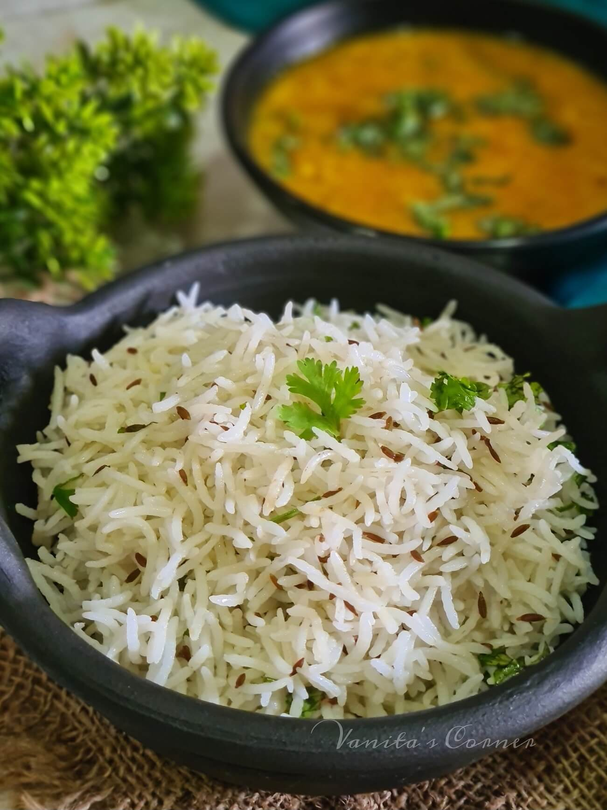
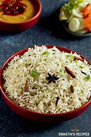
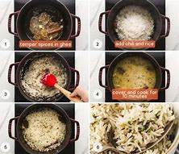
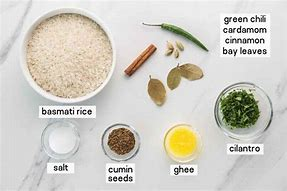

JEERA RICE




ESTIMATED CALORIES INTAKE:
246 Cal
INGREDIENTS:
- 1 cup long grained basmati rice, Uncooked. 200g
- 1 tablespoon neutral oil, clarified butter or ghee, I used canola oil
- 2 teaspoon cumin seeds
- 1 green chili, finely chopped
- 3 green cardamom pods
- 1 stick cinnamon
- 3 cloves
- 5 black peppercorns
- 2 cups water, + more for rinsing and soaking. 500ml.
- 1 bay leaf
- 1 teaspoon salt
- handful chopped cilantro, optional
RECIPE TO MAKE JEERA RICE:
- Begin with rinsing the basmati rice. You want to rinse the rice so many times so that the water that comes out of it is clear. You can also soak the rice for 30 minutes after this.
- Heat ghee, neutral oil or clarified butter in a pot or a saucepan.
- When the oil is medium-high heat, add the cumin seeds, and when they start to crackle, add green chilis and fry for a few seconds. You want the heat high enough for it to crackle, but still avoid burning the spices.
- Add the cinnamon stick, peppercorns, cardamom and cloves and fry for another 20 seconds.
- Now it's time to add in the rinsed and soaked rice, 2 cups of new water, salt and the bay leaf. Have it up to a boil and then down to a simmer, covered, until all the water is absorbed (varies from rice to rice, check the packaging). Around 15-20 minutes.
- Remove from heat and let it rest for 5 minutes, still covered. Remove cinnamon stick, bay leaf and cloves. Take out peppercorns if you find them, but if not that is also ok. Fluff the rice with a fork, garnish with cilantro and it's ready to serve!